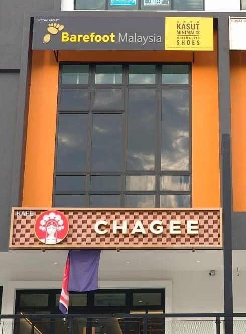
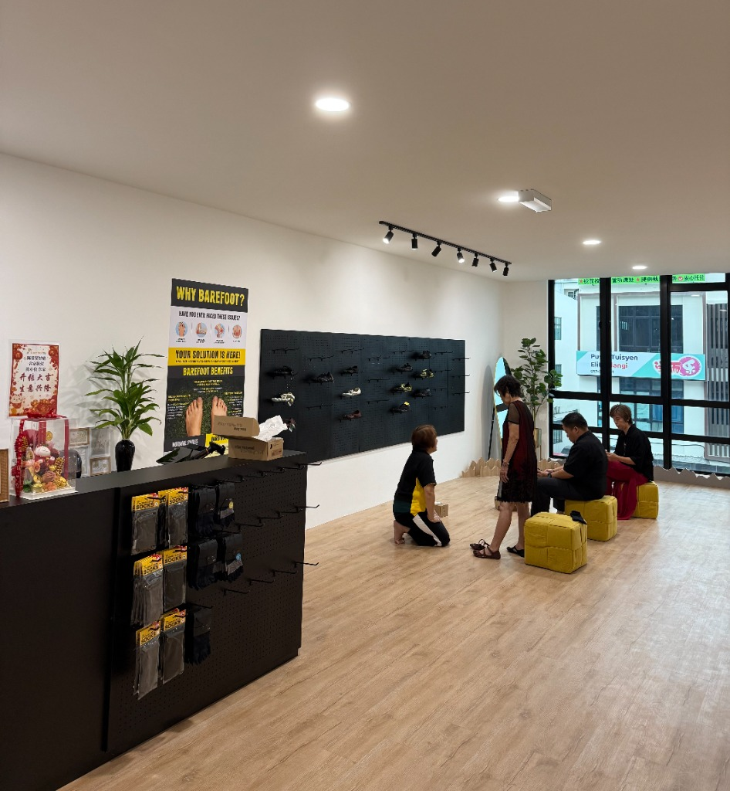
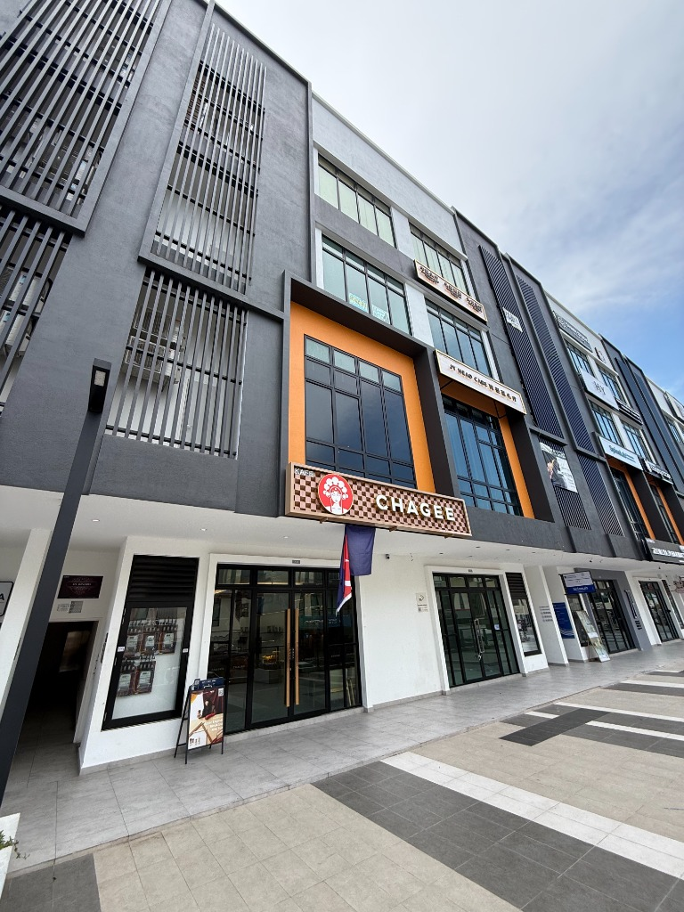
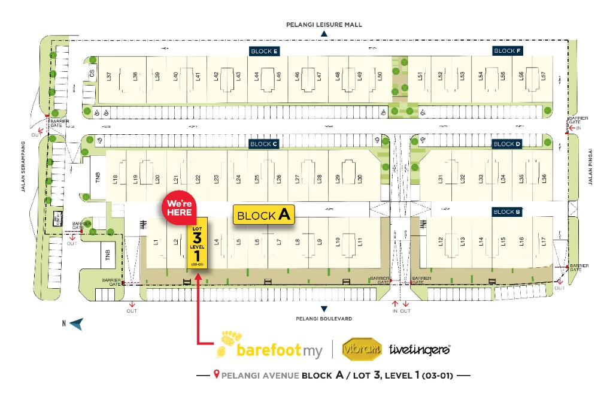

Let your feet MOVE
more FREELY
Vibram FiveFingers is now officially open at Pelangi Avenue, Johor Bahru!
Our store is located at PELANGI AVENUE Block A, Lot 3, Level 1


Access & Info
Our lifestyle store located in the heart of Johor Bahru. Explore our collection of Vibram FiveFingers for running, fitness, and daily lifestyle.
Address
#03-01, Blok A, Pusat Komersial Pelangi, Jalan Sri Pelangi 4, Taman Pelangi, 80400 Johor Bahru, Johor.
Business Hours
Wed-Thu: 10am - 6pm
Fri-Sun: 10am - 7pm
(Monday and Tuesday are closed.)
Phone
+60-7-878 2856
Enlarge Map